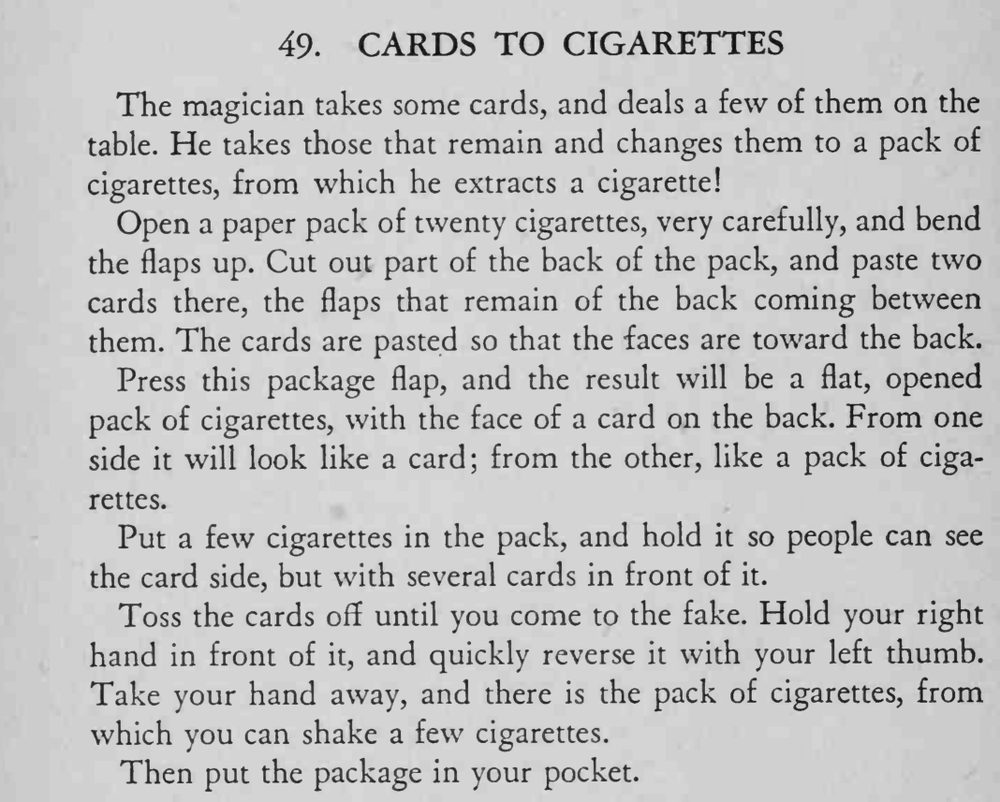

魔术师发下几张牌，把剩下的牌一翻，竟变成一包香烟，还从中抖出了几支烟。
翻面那一下要用右手完全挡住；假烟包装上牌后，厚度要和真牌相称。

The magician takes some cards, and deals a few of them on the table. He takes those that remain and changes them to a pack of cigarettes, from which he extracts a cigarette! Open a paper pack of twenty cigarettes, very carefully, and bend the flaps up. Cut out part of the back of the pack, and paste two cards there, the flaps that remain of the back coming between them. The cards are pasted so that the faces are toward the back. Press this package flap, and the result will be a flat, opened pack of cigarettes, with the face of a card on the back. From one side it will look like a card; from the other, like a pack of cigarettes. Put a few cigarettes in the pack, and hold it so people can see the card side, but with several cards in front of it. Toss the cards off until you come to the fake. Hold your right hand in front of it, and quickly reverse it with your left thumb. Take your hand away, and there is the pack of cigarettes, from which you can shake a few cigarettes. Then put the package in your pocket.